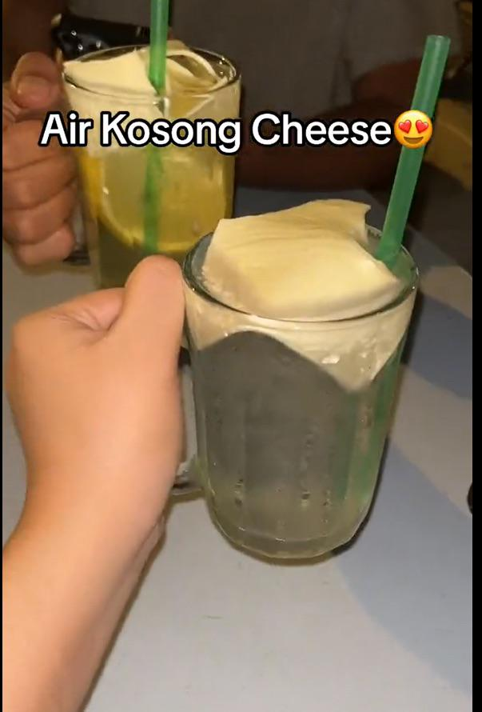

Cuisine of Depok : Recipes
Ais Kosong Cheese

The most unique drink in malaysia, now claimed by Depok
drink it at your own risk
ingredients :
- one glass of water
- enough ices
- one cheese slice of your liking
steps :
- add ices to your glass of water
- add cheese slice on top
- enjoy your weirdass drink!
return to top
return home